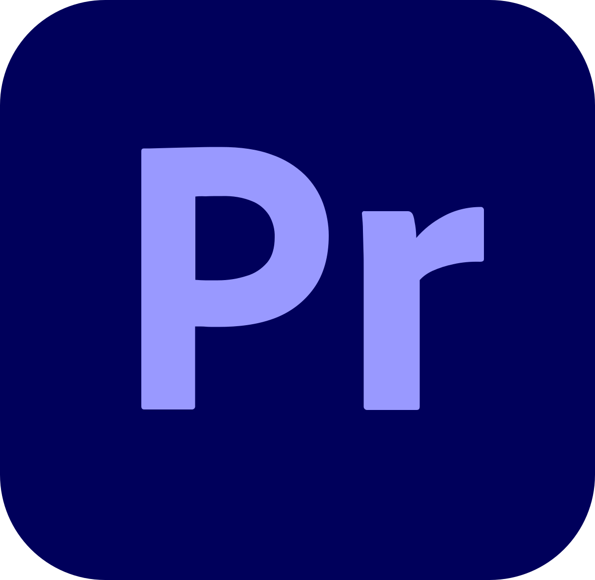
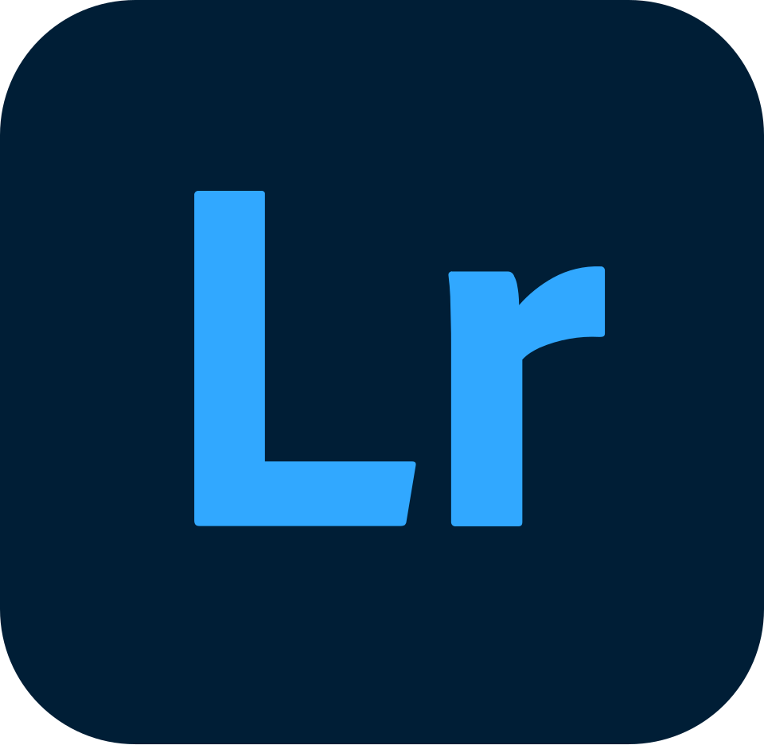

XiEl. Alexis Carpentier
Créatif pluridisciplinaire spécialisé en montage vidéo rythmique, motion design et étalonnage cinématique. Chaque coupe, chaque transition et chaque nuance de couleur sont calibrées avec une précision chirurgicale.

Projets Sélectionnés
Une vitrine de mes réalisations les plus marquantes en vidéo, motion design et photographie.

Edit Motion Design — Headlock
Synchronisation visuelle et géométrie rythmique animée sur piste sonore complexe.

Clip Musical
Production vidéo intégrant des effets visuels, montage rythmique et travail colorimétrique.

Promotion IUT
Film promotionnel dynamique mettant en lumière la vie étudiante et les infrastructures.
Nuit de l'Hypnose
Conception de l'identité visuelle complète et des supports pour un événement caritatif.

Karting & Adrénaline
Prises de vue haute vitesse sur piste, figeant la tension, les trajectoires et l'intensité.

Série Portrait & Mood
Portraits en lumière ambiante naturelle avec traitement poussé des contrastes et de la texture.


Post-Production & Compétences
Une maîtrise technique complète pour sublimer vos images de la prise de vue au master final.
Montage & Rythme
Construction narrative, découpage percutant, gestion fine de la timeline et synchronisation sonore au millième de seconde.
Motion Design & VFX
Création d'animations graphiques fluides, typographie cinétique, incrustations, compositing et habillages vidéo.
Étalonnage & Color Science
Normalisation LOG vers REC.709, harmonisation des plans, gestion des teintes et création de palettes cinématiques immersives.
Photographie & Retouche
Cadrage soigné, gestion de la lumière ambiante, retouche chromatique poussée et sublimation des textures.
Suite Logicielle & Outils de Production

Premiere Pro
LightroomÀ Propos de XiEl
"La post-production n'est pas une simple étape technique, c'est l'art de donner un rythme, une tension et une âme durable à chaque image."
Je m'appelle Alexis Carpentier (XiEl). Passionné par l'art du montage, du motion design et de la prise de vue, je conçois des projets visuels qui allient exigence technique et narration forte. Mon approche repose sur une écoute attentive des besoins et une exécution millimétrée.
Donnons vie à votre prochain projet visuel.
Vous avez un projet de clip, un besoin en motion design, un montage vidéo ou une série photographique ? Parlons-en et créons quelque chose d'exceptionnel.